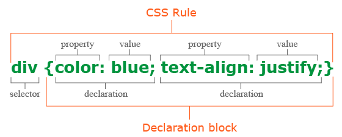

CSS - Cascading Style Sheets
26 February 2021

HTML was never intended to contain tags for formatting a web page. HTML was created to describe the content of a web page. When tags like "font", and color attributes were added to the HTML 3.2 specification, it started a nightmare for web developers. Development of large websites, where fonts and color information were added to every single page, became a long and expensive process. To solve this problem, the World Wide Web Consortium (W3C) created CSS. CSS removed the style formatting from the HTML page.
What is CSS?
CSS (Cascading Style Sheets) is the language which defines styles for web pages, including the design, layout and variations in display for different devices and screen sizes. External stylesheets are stored in CSS files, so it's possible to change the look of an entire website by changing just one file.
CSS Syntax
A CSS rule consists of a selector and a declaration block. The selector points to the HTML element which has to be styled. The declaration block contains one or more declarations separated by semicolons. Each declaration includes a CSS property name and a value, separated by a colon. Multiple CSS declarations are separated with semicolons, and declaration blocks are surrounded by curly braces.

CSS Selectors
A CSS selector selects the HTML element(s) you want to style. We can divide CSS selectors into five categories.
Simple selectors (select elements based on name, id, class)
h1 {
text-align: center;
color: red;
}
#specialid {
text-align: right;
color: blue;
}
.main-paragraph {
text-align: left;
color: black;
}
Combinator selectors (select elements based on a specific relationship between them)
div.box {
margin: 5px;
padding: 5px;
border: 1px solid green;
}
Pseudo-class selectors (select elements based on a certain state)
a:hover {
color: #000000;
}
Pseudo-elements selectors (select and style a part of an element)
h1::before {
content: '\f137';
}
Attribute selectors (select elements based on an attribute or attribute value)
a[target="_blank"] {
background-color: yellow;
}
Declaration block
A declaration block consists of a list of declarations in braces. Each declaration itself consists of a property, a colon (:), and a value. If there are multiple declarations in a block, a semi-colon (;) must be inserted to separate each declaration. An optional semi-colon after the last (or single) declaration may be used. Properties are specified in the CSS standard. Each property has a set of possible values. Some properties can affect any type of element, and others apply only to particular groups of elements. Values may be keywords, such as "center" or "inherit", or numerical values, such as 200px (200 pixels), 50vw (50 percent of the viewport width) or 80% (80 percent of the parent element's width). Color values can be specified with keywords (e.g. "red"), hexadecimal values (e.g. #FF0000, also abbreviated as #F00), RGB values on a 0 to 255 scale (e.g. rgb(255, 0, 0)), RGBA values that specify both color and alpha transparency (e.g. rgba(255, 0, 0, 0.8)), or HSL or HSLA values (e.g. hsl(000, 100%, 50%), hsla(000, 100%, 50%, 80%)).
Inheritance
Inheritance is a key feature in CSS; it relies on the ancestor-descendant relationship to operate. Inheritance is the mechanism by which properties are applied not only to a specified element, but also to its descendants. Inheritance relies on the document tree, which is the hierarchy of XHTML elements in a page based on nesting. Descendant elements may inherit CSS property values from any ancestor element enclosing them. In general, descendant elements inherit text-related properties, but their box-related properties are not inherited. Properties that can be inherited are color, font, letter-spacing, line-height, list-style, text-align, text-indent, text-transform, visibility, white-space and word-spacing. Properties that cannot be inherited are background, border, display, float and clear, height, and width, margin, min- and max-height and -width, outline, overflow, padding, position, text-decoration, vertical-align and z-index. Inheritance can be used to avoid declaring certain properties over and over again in a style sheet, allowing for shorter CSS. Inheritance in CSS is not the same as inheritance in class-based programming languages, where it is possible to define class B as "like class A, but with modifications". With CSS, it is possible to style an element with "class A, but with modifications". However, it is not possible to define a CSS class B like that, which could then be used to style multiple elements without having to repeat the modifications.
Specificity
Specificity refers to the relative weights of various rules. It determines which styles apply to an element when more than one rule could apply. Based on specification, a simple selector (e.g. H1) has a specificity of 1, class selectors have a specificity of 1,0, and ID selectors a specificity of 1,0,0. Because the specificity values do not carry over as in the decimal system, commas are used to separate the "digits" (a CSS rule having 11 elements and 11 classes would have a specificity of 11,11, not 121).
| Selectors | Specificity |
| h1 {color: white;} | 0, 0, 0, 1 |
| p em {color: green;} | 0, 0, 0, 2 |
| .grape {color: red;} | 0, 0, 1, 0 |
| p.bright {color: blue;} | 0, 0, 1, 1 |
| p.bright em.dark {color: yellow;} | 0, 0, 2, 2 |
| #id218 {color: brown;} | 0, 1, 0, 0 |
| style=" " | 1, 0, 0, 0 |
Advantages
Separation of content from presentation: CSS facilitates publication of content in multiple presentation formats based on nominal parameters. Nominal parameters include explicit user preferences, different web browsers, the type of device being used to view the content (a desktop computer or mobile device), the geographic location of the user and many other variables.
Site-wide consistency: when CSS is used effectively, in terms of inheritance and "cascading", a global style sheet can be used to affect and style elements site-wide. If the situation arises that the styling of the elements should be changed or adjusted, these changes can be made by editing rules in the global style sheet. Before CSS, this sort of maintenance was more difficult, expensive and time-consuming.
Bandwidth: a stylesheet, internal or external, specifies the style once for a range of HTML elements selected by class, type or relationship to others. This is much more efficient than repeating style information inline for each occurrence of the element. An external stylesheet is usually stored in the browser cache, and can therefore be used on multiple pages without being reloaded, further reducing data transfer over a network.
Page reformatting: with a simple change of one line, a different style sheet can be used for the same page. This has advantages for accessibility, as well as providing the ability to tailor a page or site to different target devices. Furthermore, devices not able to understand the styling still display the content.
Accessibility: without CSS, web designers must typically lay out their pages with techniques such as HTML tables that hinder accessibility for vision-impaired users (see Tableless web design#Accessibility).